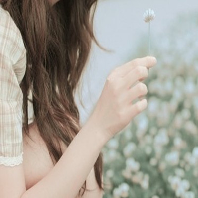
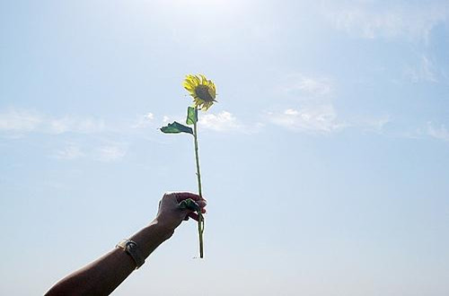
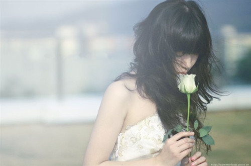
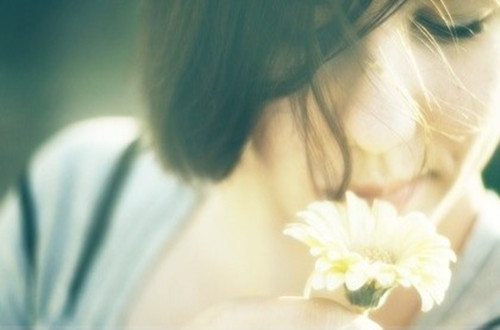
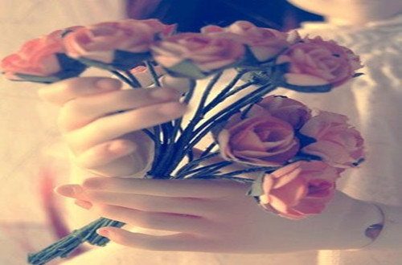

引导语：人生是个圆，有的人走了一辈子也没有走出命运画出的圆圈。他就是不知道，圆上的每一个点都有一条腾飞的切线。所以，人生要经得起考验和磨练。
1、没有人有耐心听你讲完自己的故事，因为每个人都有自己的话要说；没有人喜欢听你抱怨生活，因为每个人都有自己的苦痛；世人多半寂寞，这世界愿意倾听、习惯沉默的人，难得几个。我再也不想对别人提起自己的过往，那些挣扎在梦魇中的寂寞、荒芜，还是交给时间，慢慢淡漠。
2、总要等到过了很久，总要等到退无可退，才知道我们曾亲手舍弃的东西，在后来的日子里，再也遇不到了。
3、无论去哪儿，什么天气，记得带上自己的阳光。
4、时间可以改变很多人或事，所谓的沧海桑田，其实不过就是弹指一挥间而已。
5、曾经在某一个瞬间，我们以为自己长大了。有一天，我们终于发现，长大的含义除了欲望还有勇气和坚强，以及某种必须的牺牲。在生活的面前我们还都是孩子，其实我们从未长大，还不懂得爱和被爱。
6、你浪费掉了太多自以为是而又狼狈不堪的青春，那里有笑有泪，有自信有迷茫，你伤人也被人伤，难免颓废与寂寞。也许你会坚信自己与众不同，坚信世界因你而变；你以为自己长大了，但突然发现，长大需有勇气、责任、坚强及某些妥协。在生活面前，其实也许你从未长大。
7、在一回首间，才忽然发现，原来，我一生的种种努力，不过只为了要使周遭的人都对我满意而已。为了要博得他人的称许与微笑，我战战兢兢地将自己套入所有的模式，所有的桎梏直到走到中途，才忽然发现，我只剩下一副模糊的面目，和一条不能回头的路。
8、如果生活是一杯水，那么痛苦就是掉落杯中的灰尘。没有谁的生活始终充满幸福快乐，总有一些痛苦会折磨我们的心灵。我们可以选择让心静下来，慢慢沉淀那些痛苦。
9、不要太在乎一些人，越在乎，越卑微。从现在起，聪明一点，不要问别人想不想你，爱不爱你？若是要想你、爱你自然会对你说，但从你的嘴里说出来，别人会很骄傲和冷落你。不要过份在意一些人，过份在乎一些事，顺其自然，以最佳的心态面对。这个世界就是这样：往往在最在乎的事物面前，我们最没有价值。
10、不喊痛，不一定没感觉；不要求，不一定没期待；不落泪，不一定没伤痕；不说话，不一定没心声；沉默，不代表自己没话说；离开，不代表自己很潇洒；快乐，不代表自己没伤心；幸福，不代表自己没痛过。
11、有的人你看了一辈子，却忽视了一辈子；有的人你只看了一眼，却影响了你的一生；有的人热情的为你而快乐，却被你冷落；有的人让你拥有短暂的快乐，却得到你思绪的连锁；有的人一相情愿了N年，却被你拒绝了N年；有的人一个无心的表情，却成了永恒的思念。这，就是人生。
12、人生是个圆，有的人走了一辈子也没有走出命运画出的圆圈。他就是不知道，圆上的每一个点都有一条腾飞的切线。
13、时间就像卷笔刀，我们都是笔。有的人被卷啊卷，笔芯就断了；有的人头就尖了；有的人花边很漂亮。这都不重要，重要的是社会地位最高的是一种叫2B的笔，只有他们能做选择题。
14、激情是鼓满船帆的风，风有时会把船帆吹断，但没有风，帆船就不能航行。
15、真正的朋友，是能够伴你度过寂寞、孤独以及沉默的那个人。
16、你生气，是因为自己不够大度；你郁闷，是因为自己不够豁达；你焦虑，是因为自己不够从容；你悲伤，是因为自己不够坚强；你惆怅，是因为自己不够阳光；你嫉妒，是因为自己不够优秀。凡此种种，每一个烦恼的根源都在自己这里。所以，每一次烦恼的出现，都是一个给我们寻找自己缺点的机会。
17、给自己一个任性的机会，让自己自由自在的任性一次。任性的转身后，就要任性的不再执着，就要任性的不再轻言放弃，就要任性的洒脱，就要任性的一个人勇敢向前走，无所畏惧的勇往直前。只有我们自己知道，清高自傲的盔甲，装在脆弱的躯壳里。
18、一个人久了，除了寂寞点外还是蛮开心的。一个人久了，会慢慢变得成熟起来。一个人久了，会比以前更爱父母。一个人久了，对所有的节日大多没什么期待。一个人久了，听到看到别人一对对的很甜蜜，心里多少还是会有些介意。一个人久了，会越来越理性，越来越现实。一个人久了，会上瘾的。
19、爱情如果说最伤人，不是他不爱你，或者你不爱他。而是望着，却不可以拥抱；想着，却不可以拥有；说着，却不可以对望。哪怕用尽了一生的力气，透支了一辈子的幸运，一直都无法靠近，还要面对一天一天的淡忘。为什么丘比特的箭要射在心上，是为了提醒我们，真爱有时会让人受伤。
20、我这个人很简单，对我好过的人我就一辈子都记得。我很容易喜欢上一个人，只要他在我难过的时候稍微对我好那么一点，哪怕只是笑一笑，我就可以闭着眼睛什么都不管地去爱他，也许这根本不是爱，但到底什么是爱，我也不明白。
21、多数时候，我们都是独自行走，要学会忍耐与坚强，别把人生走向寄托在他人身上，曾经得到的帮助，只是你的幸运罢了，只有依靠自己去跋涉、去闯荡、去拼搏，才能真正赢得属于自己的东西。那些险滩与旋涡，皆是你必经的风景，亦是命运的公正，没人欠你什么，能够对你负责到底的，唯有你自己。
22、一个人久了，除了寂寞点外还是蛮开心的。一个人久了，会慢慢变得成熟起来。一个人久了，会比以前更爱父母。一个人久了，对所有的节日大多没什么期待。一个人久了，听到看到别人一对对的很甜蜜，心里多少还是会有些介意。一个人久了，会越来越理性，越来越现实。一个人久了，会上瘾的。
23、爱情如果说最伤人，不是他不爱你，或者你不爱他。而是望着，却不可以拥抱；想着，却不可以拥有；说着，却不可以对望。哪怕用尽了一生的力气，透支了一辈子的幸运，一直都无法靠近，还要面对一天一天的淡忘。为什么丘比特的箭要射在心上，是为了提醒我们，真爱有时会让人受伤。
24、我这个人很简单，对我好过的人我就一辈子都记得。我很容易喜欢上一个人，只要他在我难过的时候稍微对我好那么一点，哪怕只是笑一笑，我就可以闭着眼睛什么都不管地去爱他，也许这根本不是爱，但到底什么是爱，我也不明白。
25、多数时候，我们都是独自行走，要学会忍耐与坚强，别把人生走向寄托在他人身上，曾经得到的帮助，只是你的幸运罢了，只有依靠自己去跋涉、去闯荡、去拼搏，才能真正赢得属于自己的东西。那些险滩与旋涡，皆是你必经的风景，亦是命运的公正，没人欠你什么，能够对你负责到底的，唯有你自己。
26、当你说你不自由时，不是指你失去了做什么的自由，而是你想做的事得不到别人足够的认同，那带给你精神上或道德上的压力，于是你觉得被压迫、被妨碍、被剥夺。翅膀长在你的肩上，太在乎别人对于飞行姿势的批评，所以你飞不起来。
27、世界上只有两种可以称之为浪漫的情感，一种叫相濡以沫，另一种叫相忘于江湖，我们要做的是争取和最爱的人相濡以沫，和次爱的人相忘于江湖。
28、生活就像忐忑，没有准确的歌词，却惊心动魄。
29、茫茫人海中谁遇见了你、你邂逅了谁、谁错过了你、你注意了谁、谁陪你走了一程、你陪谁过一生、一路上的行走，你会遇上很多人也许是陪你走一站的，也许只是一个过客，于是生命中留下了许多逗号，一段经历一个逗号，一段感情一个逗号，一段付出一个逗号，无数个逗号的等待，只为最终那个句号。
30、有些话没对你说，并不是想对你刻意隐瞒什么，而是我大脑这台计算机还没有算出，说还是不说，才能让你得到更多的快乐；有些想法没有表达，其实并不是想有意掩饰什么，而是我还没有那么高的智商能准确判断，表达后你的幸福能不能比原来更多。
31、我还是习惯了一个人的生活，不计较是否会接到电话、短信，渐渐地失去对电话的依赖，失去对你的依赖，也失去对温暖的依赖还记得吗？你们俩牵手，在模糊的光晕里与我错肩美好得像是幻觉一样，而我在离你几千公里外的地方静静地举起相机，按下快门，对着胶片微笑你说，是不是不爱了，就不疼了。
32、生没有如果，只有后果和结果。过去的不再回来，回来的不再完美。生活有进退，输什么也不能输心情。生活最大的幸福就是，坚信有人爱着我。对于过去，不可忘记，但要放下。因为有明天，今天永远只是起跑线。生活简单就迷人，人心简单就幸福，学会简单其实就不简单。
编后语：当你说你不自由时，不是指你失去了做什么的自由，而是你想做的事得不到别人足够的认同，那带给你精神上或道德上的压力，于是你觉得被压迫、被妨碍、被剥夺。